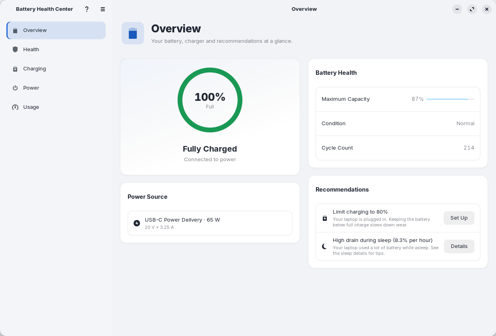

Battery Health Center Manual
Battery Health Center is a native GNOME app for the battery in your laptop. It shows how healthy the battery is, lets you protect it with a charge limit and a schedule, and shows which apps are draining it. This manual explains every feature of the app, page by page, with screenshots.

How to read this manual#
- New here? Start with Getting started.
- Looking for one page of the app? Pick it in the left menu. Each page of this manual follows the app's own pages, with every control explained.
- Looking for a setting, a file or a command? See Reference.
- Something is not working? See Troubleshooting and FAQ.
- Press / anywhere in the manual to search it.
The pages of this manual#
| Page | What it covers |
|---|---|
| Getting started | Install the app, open it for the first time and find your way around. |
| Overview | Your battery, charger and recommendations at a glance. |
| Health | Capacity, wear, cycle count, the long-term trend and calibration. |
| Charging | Charge limits, profiles, one-time full charges and pausing charging. |
| Charging schedule | Full when you need it, protected the rest of the time. |
| Power | Power mode, automatic power mode and GNOME's power-saving settings. |
| Usage | Battery history, sleep drain and which apps use the most energy. |
| Notifications and preferences | Choose which notifications you get and when. |
| Reports and your data | HTML battery report, CSV export and where everything is stored. |
| Reference | Keyboard shortcuts, command line, files and a glossary. |
| Troubleshooting and FAQ | Answers to the most common questions and problems. |
| Privacy and security | What stays on your computer and what the root helper can do. |
| What's new | What changed in every release, with links to the full explanation. |
Principles#
- Native and light. Rust with GTK 4 and libadwaita. It follows your GNOME theme, light and dark.
- Private by design. Everything runs on your computer. The app makes no network requests and sends no telemetry. The only things that leave your computer are the links you click yourself, such as this manual.
- Careful with root. Only a small helper runs as root. It accepts nothing but validated values and writes only the battery's charge-limit files and its own configuration.
- Accessible. Screen reader names and descriptions, and charts that never rely on color alone.
- In your language. The app follows your system language: English, Spanish, German, French and Simplified Chinese. This manual is in English.
Getting help#
- In the app, press F1 or click the ? button at the top of the sidebar to open this manual.
- Found a bug or have an idea? Open an issue.